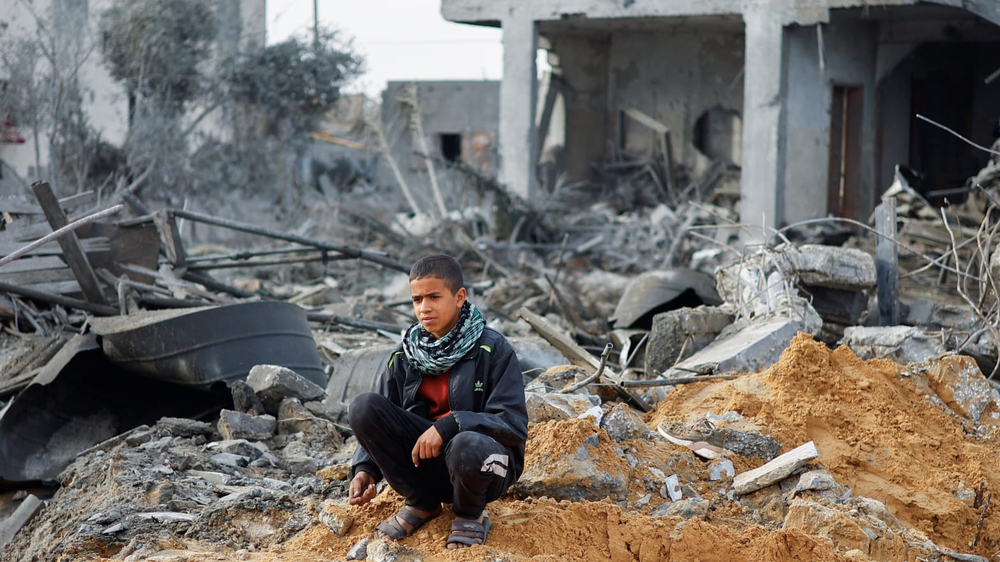

International News
King Harald V of Norway remains hospitalized in Malaysia as officials say his condition is improving
Credit: AP Photo/Francisco Seco
Netanyahu Rejects U.S. Plans for Post-War Gaza With His Own Vision
Credits: Ibraheem Abu Mustafa/Reuters